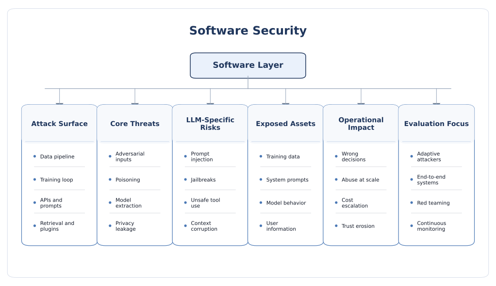

Software Security
Software security is the layer where AI systems first meet hostile inputs, untrusted data, exposed APIs, retrieval pipelines, and tool-enabled automation. It spans classical adversarial machine learning problems such as evasion, poisoning, privacy leakage, and model extraction, but now also includes prompt injection, jailbreaks, insecure output handling, retrieval corruption, excessive agency, and software supply-chain risks in LLM and agentic deployments.
Software security is wider than model robustness
In many public discussions, software security in AI is reduced to adversarial examples or prompt attacks. In practice, the software attack surface is much broader. A deployed AI service includes data collection, curation, labeling, training, fine-tuning, serving APIs, access-control logic, orchestration code, retrieval layers, external tools, prompt templates, post-processing, and monitoring. Every one of these stages can become a security boundary, and every boundary can fail in a different way.
A useful research view is to separate model-centric risk from system-centric risk. Model-centric risk asks whether the learned function itself can be manipulated, stolen, or queried to leak information. System-centric risk asks whether the broader application stack around the model can be abused through interfaces, plugins, retrieval, state handling, or unsafe automation. Modern AI products fail at both levels, which is why software security must be analyzed as an end-to-end system problem rather than a single-model robustness problem.
Core security goals at the software layer
- Integrity: prevent attackers from changing data, prompts, behavior, or downstream actions.
- Confidentiality: protect training data, user data, model parameters, and hidden instructions.
- Availability: maintain service quality under adversarial query load, abuse, or denial-of-service attempts.
- Authenticity and provenance: know where models, datasets, embeddings, tools, and retrieved content came from.
- Containment: ensure that even if a model is manipulated, its impact on other software components remains bounded.
- Auditability: support logging, replay, red-teaming, and incident response for AI-specific failures.
Why this section matters
Software security is often the first place where AI misuse becomes visible to users and product teams. Attackers do not need physical access, special lab equipment, or detailed hardware knowledge to exploit the software layer. They can often interact remotely through public APIs, chat interfaces, uploaded documents, retrieved webpages, plugins, or multi-agent workflows. As a result, software-side vulnerabilities are not only academically important; they are frequently the most scalable and economically attractive attack path.

Threat model and software-side attack surface
A rigorous threat model should specify when the attacker intervenes, what they can access, how much they know about the model or pipeline, and what objective they pursue. In AI, those dimensions matter because a query-only attacker behaves very differently from a supply-chain attacker, and a training-time poisoner behaves differently from a retrieval-layer manipulator.
Attacker positions
- Input attacker: can only control user queries, images, text, or sensor-derived inputs at inference time.
- Data attacker: can inject, modify, relabel, or bias training, fine-tuning, or evaluation data.
- Query attacker: has black-box API access and tries to steal behavior, infer secrets, or degrade service.
- Prompt attacker: can place malicious instructions in chat messages, retrieved documents, emails, code, or webpages.
- Workflow attacker: targets orchestration logic, tool use, memory, or agent-to-agent communication.
- Supply-chain attacker: compromises models, libraries, datasets, plugins, vector stores, or model-serving dependencies.
- Insider or privileged attacker: abuses logging, eval pipelines, annotation systems, or fine-tuning access.
Attacker goals
- Integrity violation: force misclassification, induce hallucinated reasoning, implant a backdoor, or trigger harmful actions.
- Confidentiality breach: extract private data, system prompts, embeddings, credentials, or model behavior.
- Availability attack: raise latency, inflate cost, exhaust tokens, or crash the service.
- Abuse enablement: bypass safeguards, jailbreak policy filters, or repurpose the system for malicious tasks.
- Economic theft: replicate a proprietary model’s functionality through repeated API queries.
Lifecycle-oriented view of software attacks
The most useful way to organize software threats is by the AI lifecycle stage they target.
- Before training: dataset poisoning, source contamination, labeling errors, provenance failure, benchmark leakage.
- During training or fine-tuning: backdoor insertion, objective manipulation, federated model poisoning, unsafe instruction tuning.
- During deployment: evasion, adversarial examples, model extraction, privacy inference, jailbreaks, prompt injection, unsafe tool use.
- After deployment: feedback poisoning, online learning abuse, retrieval store corruption, memory contamination, log leakage.
Major software-side attack classes
1. Evasion and adversarial examples
Evasion attacks manipulate inference-time inputs so that a model makes the wrong prediction while the input still appears benign or only slightly changed to humans. In discriminative ML this often appears as image, audio, or text perturbation. In language settings, it can appear as token-level perturbation, paraphrasing, suffix attacks, or semantic steering designed to bypass classifiers and moderation filters.
- Common targets: content moderation, malware detection, spam filtering, vision classifiers, anomaly detection.
- Key reason they matter: the model’s decision boundary can be much more fragile than user-facing accuracy suggests.
- Research issue: robustness on one benchmark or perturbation family rarely guarantees robustness under adaptive attacks.
2. Data poisoning and backdoors
Poisoning attacks compromise the training signal itself. The attacker injects malicious samples, manipulates labels, corrupts fine-tuning data, or influences model updates in collaborative settings such as federated learning. The goal can be broad degradation, targeted misbehavior, or hidden triggers that activate only when a specific pattern appears. Clean-label and backdoor attacks are particularly dangerous because the poisoned samples may look legitimate to human curators.
- Availability poisoning: reduce overall model quality or destabilize training.
- Targeted poisoning: force errors on one class, one entity, or one decision region.
- Backdoors/Trojans: implant a trigger so the model behaves normally most of the time but fails on command.
- Federated model poisoning: malicious clients submit crafted updates to corrupt the global model.
3. Privacy leakage and inference attacks
AI systems can reveal more than intended. A determined attacker may infer whether a sample was used in training, recover attributes about private records, reconstruct sensitive content, or induce a generative model to emit memorized data. In classical ML this appears as membership inference and model inversion. In modern generative systems it also includes prompt leakage, hidden instruction disclosure, training-data extraction, and unintended exposure through logs or tool calls.
- Membership inference: determine whether a given record likely belonged to the training set.
- Attribute inference: infer sensitive features correlated with model behavior.
- Model inversion / reconstruction: recover representative features or sensitive patterns from outputs.
- Extraction from generative models: elicit memorized strings, secrets, proprietary text, or internal prompts.
4. Model extraction and behavior stealing
When a model is exposed through an API, the service boundary becomes a learning interface for the attacker. By sending carefully chosen queries and collecting outputs, the attacker may approximate the decision surface, infer architecture cues, learn confidence behavior, or train a substitute model that reproduces valuable functionality. This is especially relevant when confidence scores, top-k outputs, or unrestricted query access are exposed.
- Motivations include IP theft, cheaper offline replication, attack transferability, and competitive surveillance.
- Extraction risk increases when APIs reveal rich outputs, have weak rate limits, or serve niche high-value tasks.
- Even imperfect extraction can be enough to enable downstream adversarial attacks against the original system.
5. Prompt injection, jailbreaks, and instruction hijacking
In LLM systems, instructions and data are often processed together. This creates a structural problem: untrusted text can be interpreted as commands rather than mere content. An attacker can directly tell the model to ignore prior rules, or indirectly place malicious instructions inside retrieved documents, emails, webpages, PDFs, code repositories, or memory entries. Once tool use is available, prompt injection can become an action-execution problem rather than a text-generation problem.
- Direct prompt injection: the attacker places malicious instructions in the user-visible query.
- Indirect prompt injection: the malicious instructions are hidden inside content the model later reads.
- Jailbreaking: the goal is to bypass policy restrictions or safety guardrails.
- Instruction hijacking: the goal is to change workflow behavior, exfiltrate data, or misuse tools.
6. Retrieval-layer and RAG-specific attacks
Retrieval-Augmented Generation improves freshness and grounding, but it also creates a new attack surface: ingestion pipelines, document chunking, embeddings, indices, retrieval ranking, and context assembly. An attacker can poison the knowledge base, manipulate ranking, inject malicious content into retrieved passages, or exploit the fact that the model may over-trust retrieved text.
- Knowledge-base poisoning can bias answers, implant hidden instructions, or selectively distort facts.
- Chunk boundary effects and ranking heuristics can be exploited to increase attacker-controlled context exposure.
- RAG can amplify privacy risk when sensitive documents are retrievable but insufficiently access-controlled.
7. Insecure output handling and excessive agency
The danger is not only what the model says, but what downstream software does with what the model says. If model output is treated as trusted code, SQL, shell commands, policies, or API arguments, then the LLM becomes a mediator for conventional software exploitation. Likewise, if the model is allowed to send emails, transfer files, update records, or trigger workflows without strong approval gates, then prompt manipulation can become a real-world security incident.
- Generated code or commands may be syntactically valid but unsafe.
- Tool arguments may contain hidden data exfiltration or privilege escalation behavior.
- Long-horizon agents accumulate state, memory, and permissions, which broadens the blast radius of a single compromise.
8. Denial of service, abuse economics, and cost attacks
AI services are economically attackable. An adversary may not need to break confidentiality or integrity if they can simply increase the operational cost of serving requests, create timeouts, or starve legitimate users. Token flooding, recursive tool loops, oversized context windows, expensive retrieval patterns, and repeated high-compute prompts can all create an asymmetric cost burden for defenders.
9. AI software supply chain risk
The modern AI stack depends on pretrained models, fine-tuning datasets, tokenizers, orchestration frameworks, embedding services, vector databases, prompt templates, benchmark corpora, guardrail libraries, and external plugins. That dependency chain means software security must also include provenance, signing, version control, dependency scanning, and trust assumptions about upstream artifacts.
Countermeasures and secure design principles
No single defense solves software-side AI security. The right question is not “which defense is best?” but “which layers reduce risk at the data, model, system, and operational levels simultaneously?” Strong practice therefore looks like defense in depth: combine hardening of inputs, training pipelines, model interfaces, workflow logic, output validation, and operational monitoring.
1. Data-centric defenses
- Data provenance and lineage: track source, collection path, labeling history, and transformation steps.
- Dataset hygiene: deduplicate, detect outliers, inspect label conflicts, and monitor class imbalance shifts.
- Backdoor screening: search for suspicious triggers, shortcut correlations, and small poisoned clusters.
- Trusted ingestion for RAG: validate documents before indexing and isolate untrusted external content.
- Federated robustness: use robust aggregation, client reputation, clipping, and anomaly detection for update streams.
The limitation is that poisoning is often intentionally stealthy. A small number of highly optimized poisoned samples may evade simple statistical filters, especially in large heterogeneous datasets or instruction-tuning corpora.
2. Model-centric defenses
- Adversarial training: improve robustness by including adversarial or hard examples during training.
- Regularization and calibration: reduce overconfidence and make attack detection easier.
- Differential privacy: reduce leakage about individual training examples, though often with utility trade-offs.
- Confidence reduction and output truncation: expose less information to black-box extractors.
- Watermarking and fingerprinting: support ownership claims and stolen-model investigation.
These methods help, but they usually protect only a subset of attack classes. A model hardened against image perturbations may still leak training data, and a privacy-enhanced model may still be vulnerable to prompt injection at the application layer.
3. Interface and API hardening
- Apply rate limiting, quotas, abuse detection, and account-level monitoring for model APIs.
- Reduce unnecessary output richness: avoid exposing detailed logits, full confidence vectors, or excessive metadata.
- Require authentication and differentiated privileges for normal users, evaluators, and internal developers.
- Use schema-constrained outputs where downstream components expect structured data.
- Treat every model output as untrusted until validated by deterministic code.
4. Prompt- and context-level defenses
- Instruction/data separation: do not mix untrusted content into high-privilege developer instructions.
- Context compartmentalization: pass the minimum required information to each model call or tool.
- Prompt isolation: separate retrieved text, user text, system guidance, and tool outputs into clearly labeled channels.
- Prompt injection detection: use classifiers, rules, or challenge-response checks as soft barriers, not sole protections.
- Human confirmation: require explicit user approval before external side effects such as sending, buying, deleting, or transferring.
A key design lesson is that prompt injection should be treated like a persistent and adaptive software threat, not a bug that can be perfectly patched once.
5. Tool-use and agent safeguards
- Grant each tool the least privilege required for its task.
- Use allowlists for domains, file paths, commands, or action types.
- Sandbox code execution, browsing, file access, and external connectors.
- Log tool calls with inputs, outputs, user identity, and approval state.
- Introduce policy checkpoints between reasoning and acting.
- Prefer typed tool schemas over free-form natural language tool invocation.
6. Retrieval and RAG protections
- Control who can ingest or modify indexed content.
- Run malware, secret, and policy scanning before indexing documents.
- Attach trust labels or provenance metadata to retrieved chunks.
- Filter retrieval results by authorization context before they reach the model.
- Use post-retrieval verification for high-risk factual or compliance-sensitive answers.
7. Operational security and continuous evaluation
- AI red teaming: continuously test evasion, jailbreak, extraction, privacy, and workflow abuse scenarios.
- Canary data and seeded traps: help detect unauthorized data disclosure or suspicious retrieval behavior.
- Incident response: maintain rollback paths for prompts, models, vector stores, and policy changes.
- Telemetry: monitor refusal patterns, tool-call anomalies, retrieval anomalies, token spikes, and repeated extraction-like queries.
- Staged deployment: use shadow testing, canary rollout, and limited blast radius for new models and prompts.
Open research challenges and future directions
Despite major progress, software-side AI security remains fragmented. Some defenses work only for narrow perturbation models, some evaluations ignore adaptive attackers, and many product deployments depend on informal prompt engineering rather than principled security design. The next phase of research needs to move beyond isolated benchmarks toward system-level assurance.
1. From model-level robustness to system-level security
Many papers still evaluate a single model in isolation. Real failures increasingly emerge from the interaction of model, retrieval, memory, tool calling, output handling, and business logic. Research needs better compositional security methods for end-to-end AI applications.
2. Adaptive attackers remain under-modeled
Static benchmark attacks underestimate real adversaries. Attackers learn the defense, tune prompts over time, exploit human workflow assumptions, and combine multiple weak points. Evaluation should therefore include adaptive, multi-stage, and economically motivated attackers.
3. Prompt injection is partly architectural
Prompt injection is difficult because current LLM pipelines often process instructions and untrusted content in the same representational channel. This means purely detection-based approaches may always be brittle. A major research direction is how to redesign agent architectures so that successful prompt manipulation still cannot directly cause high-impact actions or data exfiltration.
4. Security-utility trade-offs are still poorly quantified
Differential privacy can reduce leakage but hurt accuracy. Confidence truncation can reduce extraction risk but harm usefulness. Strong approval gates can reduce abuse but also reduce product fluidity. The field still lacks mature, shared metrics for balancing robustness, privacy, latency, cost, user experience, and developer complexity.
5. RAG security is still immature
Retrieval has become the default enterprise design pattern, but many deployments still treat the vector store as a neutral component. In reality, the ingestion path, chunking strategy, embedding model, ranking logic, and authorization boundary all affect security. Better formal models and benchmarks for retrieval poisoning, retriever manipulation, and retrieval privacy leakage are urgently needed.
6. Privacy risks in large-scale and generative models are evolving
Membership inference, inversion, and extraction risks look different in recommendation systems, multimodal models, code models, and general-purpose LLMs. We still need sharper understanding of what memorization means operationally, how leakage changes after instruction tuning or RL-based updates, and how to measure privacy exposure without access to proprietary training data.
7. AI supply-chain assurance is incomplete
The community still lacks strong norms for dataset provenance, model attestation, tokenizer trust, prompt-template governance, embedding-model change control, and safe reuse of public checkpoints. This is a critical gap because modern AI applications are assembled from many upstream artifacts rather than built from scratch.
8. Benchmarks lag behind deployment reality
Benchmarks are often clean, static, English-only, and single-turn. Real systems are multilingual, multimodal, stateful, tool-enabled, and connected to live data. Future evaluation must better reflect realistic deployments, including partial observability, feedback loops, and long-horizon agent behavior.
9. Bridging AI security with classical AppSec and SecOps
Software security for AI should not evolve as a completely separate discipline. The strongest deployments integrate traditional software assurance ideas—least privilege, sandboxing, input validation, CI/CD controls, secrets management, dependency scanning, observability, and incident response—with AI-specific testing and threat modeling. The research challenge is to make that integration systematic rather than ad hoc.
10. Future direction
- Security-by-design architectures for LLM agents and tool ecosystems.
- Formal trust boundaries for retrieval, memory, and external tools.
- Unified metrics for robustness, privacy, and abuse resistance.
- Adaptive red-teaming frameworks that reflect real attacker iteration.
- Cross-layer work connecting software risks with cloud, edge, and hardware deployment assumptions.
- Assurance methods that remain useful even when model internals are opaque.
Selected readings and frameworks
The references below are a good starting point for a reader who wants both foundational and current views of software-side AI security.
- NIST AI 100-2 (2025): Adversarial Machine Learning Taxonomy and Terminology
- NIST AI Risk Management Framework (AI RMF)
- NIST AI 600-1: Generative AI Profile
- OWASP Top 10 for LLM Applications
- MITRE ATLAS
- Designing AI Agents to Resist Prompt Injection
- Safety in Building Agents
- I Know What You Trained Last Summer: A Survey on Stealing Machine Learning Models and Defences
- Membership Inference Attacks on Machine Learning: A Survey
- Securing RAG: A Risk Assessment and Mitigation Framework
- Data Poisoning in Deep Learning: A Survey